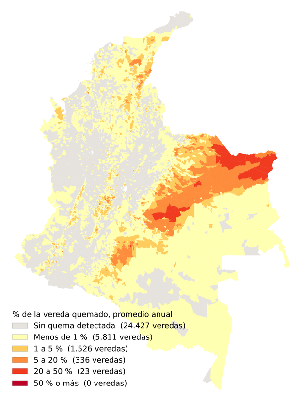
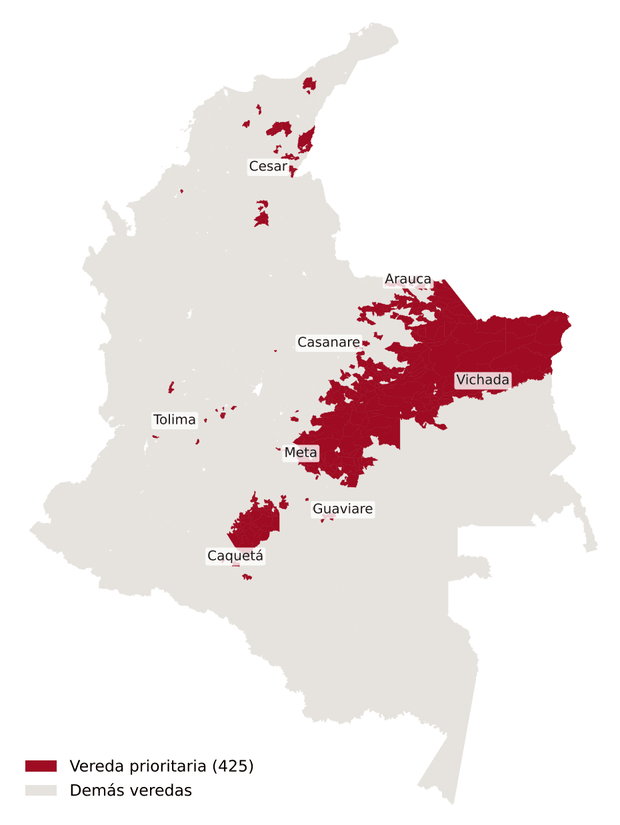

Nota metodológica
Claude1, David Aguilar2, Camila Gómez3
1 Modelo de inteligencia artificial de Anthropic. Figura como autor principal por decisión de los coautores, para dejar trazabilidad de cómo se hizo el trabajo (véase la sección 8).
2 Máster en Data Science.
3 Máster en Estudios Políticos e Internacionales.
Palabras clave: área quemada, MODIS, MCD64A1, veredas, Colombia, Orinoquía, datos abiertos.
Período: enero de 2001 a mayo de 2026 (305 meses).
Datos consultados: 11 de octubre de 2026.
Cruzamos 305 meses de área quemada detectada por satélite (producto MODIS MCD64A1, publicado para Colombia por el IDEAM) con las 32.130 veredas de la capa de referencia del DANE. Para cada vereda calculamos tres indicadores: hectáreas quemadas, porcentaje de la vereda quemado y meses con quema. Entre 2001 y 2025 el satélite detectó en promedio 2,0 millones de hectáreas quemadas por año. El 90,9 % se concentra en cuatro departamentos de la Orinoquía y el 79,3 % ocurre entre enero y marzo. Solo 7.696 veredas (24,0 %) registran alguna quema. Identificamos 425 veredas que están a la vez en el 10 % más alto de los tres indicadores; reúnen el 90,7 % de toda el área quemada detectada. Los resultados describen dónde y con qué frecuencia se detecta quema, no sus causas, y subestiman las quemas pequeñas.
Colombia tiene buena información pública sobre quemas, pero dispersa y en formatos que exigen programas especializados. Este trabajo la reúne en un mapa interactivo que cualquier persona puede abrir, y la lleva a la unidad territorial más cercana a la gente del campo: la vereda. Esta nota explica de dónde salen los datos, cómo se procesaron, cómo leer el mapa y cuáles son sus límites, de modo que cualquiera pueda repetir el ejercicio o cuestionarlo.
Usamos el producto MCD64A1, colección 6.1, elaborado por la NASA y la Universidad de Maryland a partir de los sensores MODIS de los satélites Terra y Aqua (Giglio et al., 2018). Marca, mes a mes, los píxeles de unos 500 m de lado que se quemaron. El IDEAM lo publica ya procesado para Colombia: disuelto y recortado al territorio nacional.
Cómo se descargaba en octubre de 2026. La dirección https://puntosdecalor.ideam.gov.co/archivos-area-quemada/ mostraba una lista de 305 archivos, uno por mes, llamados Area_quemada_Colombia_AAAA-MM.zip, de enero de 2001 a mayo de 2026. Cada ZIP trae un shapefile en coordenadas geográficas (EPSG:4326) con un único multipolígono: todo lo quemado ese mes. Los meses sin quema detectada traen un archivo vacío. No se necesita cuenta ni contraseña. Dos detalles prácticos: el producto se publica con varios meses de retraso, y el servidor entregaba su certificado de seguridad incompleto, por lo que una descarga automatizada con Python fallaba hasta indicarle que usara los certificados del sistema operativo (paquete truststore).
Usamos la capa de referencia de veredas del DANE, versión 2024, con 32.130 polígonos que suman 113,5 millones de hectáreas, cifra que coincide con la superficie continental del país. Las veredas no tienen deslinde legal: esta capa es una referencia estadística. En la Orinoquía y la Amazonía incluye polígonos muy grandes (resguardos, parques, áreas no municipalizadas) que no son veredas en el sentido corriente.
Cómo se descargaba en octubre de 2026. En el Geoportal del DANE: Descarga y metadatos → Datos geoestadísticos, filtro de grupo Capa de Referencia de Veredas, formato SHP. El enlace directo era https://geoportal.dane.gov.co/descargas/veredas/shp_CRVeredas_2024.zip (316 MB descomprimido). La carpeta que lo contiene no se deja listar; hay que conocer el nombre del archivo.
Tres convenciones importan para interpretar las cifras. Una misma zona puede quemarse en meses distintos y entonces se cuenta cada vez; por eso el acumulado de 25 años supera el área de muchas veredas y el porcentaje de un año se limita a 100 %. Para todo el período, el porcentaje se expresa como promedio anual. Y las veredas de menos de 100 ha (977) se excluyen de los ordenamientos, porque en ellas caben menos de cuatro píxeles y un solo píxel puede representar la mayor parte de la vereda.
Entre 2001 y 2025 el satélite detectó en promedio 2,0 millones de hectáreas quemadas por año, con un máximo de 4,0 millones en 2004 y un mínimo de 1,3 millones en 2025. Los años recientes están en la parte baja de la serie, pero esta nota no prueba si esa diferencia es una tendencia.
Las quemas siguen la temporada seca del norte del país y de la Orinoquía: enero, febrero y marzo reúnen el 79,3 % del área detectada, y si se suma diciembre, el 89,3 %. Entre abril y octubre casi no hay detecciones.
Vichada (46,8 %), Meta (27,6 %), Arauca (8,9 %) y Casanare (7,5 %) concentran el 90,9 % del área quemada detectada. Solo 7.696 de las 32.130 veredas (24,0 %) registran alguna quema en 25 años; en ninguna el promedio anual llega a la mitad de su superficie.

Cada indicador responde una pregunta distinta y tiene un sesgo propio: las hectáreas favorecen a las veredas grandes; el porcentaje, a las pequeñas; los meses miden recurrencia, no extensión. Para evitar que uno solo decida, llamamos prioritarias a las veredas que están a la vez en el 10 % más alto de los tres, entre las 7.672 veredas de 100 ha o más con alguna quema. Los umbrales resultantes son: al menos 2.610 ha acumuladas, al menos 2,6 % de la vereda en promedio anual y al menos 14 meses con quema.
Cumplen los tres criterios 425 veredas: el 1,3 % de las veredas del país, con 14,3 millones de hectáreas, que reúnen el 90,7 % de toda el área quemada detectada. Por departamento: Meta (119), Casanare (86), Arauca (62), Vichada (47), Cesar (34), Caquetá (27), Guaviare (14), Tolima (12), Bolívar (7), La Guajira (6), Valle Del Cauca (4), Magdalena (4), Cundinamarca (2), Córdoba (1).

| # | Vereda | Municipio | Departamento | Área (ha) | % anual | Ha acumuladas | Meses |
|---|---|---|---|---|---|---|---|
| 1 | Los Kioscos | Puerto Gaitán | Meta | 166.348 | 46,9 | 1.981.912 | 215 |
| 2 | Lejanias De Juriepe | Cravo Norte | Arauca | 94.163 | 44,2 | 1.058.123 | 181 |
| 3 | Juriepe | Cravo Norte | Arauca | 43.979 | 36,8 | 411.330 | 160 |
| 4 | Tillava | Puerto Gaitán | Meta | 84.262 | 33,4 | 716.017 | 165 |
| 5 | Comejenal | Puerto Gaitán | Meta | 88.970 | 32,7 | 738.776 | 177 |
| 6 | Las Brisas | Mapiripán | Meta | 20.032 | 31,8 | 162.164 | 105 |
| 7 | Las Mercedes El Oval | Guamo | Tolima | 446 | 27,2 | 3.083 | 34 |
| 8 | Cucurital | La Primavera | Vichada | 223.463 | 27,0 | 1.531.469 | 265 |
| 9 | Los Pasados | Cravo Norte | Arauca | 34.793 | 26,8 | 236.892 | 107 |
| 10 | Puerto Castro | San Martín | Meta | 164.573 | 25,7 | 1.073.342 | 234 |
| 11 | Puerto Triunfo | Puerto Gaitán | Meta | 128.595 | 25,6 | 837.293 | 166 |
| 12 | Guacacias | Santa Rosalía | Vichada | 54.444 | 25,1 | 347.859 | 179 |
| 13 | El Diamante | Mapiripán | Meta | 35.785 | 24,8 | 225.934 | 121 |
| 14 | Resguardo Indígena | Paz De Ariporo | Casanare | 74.533 | 24,1 | 457.448 | 190 |
| 15 | Santa Maria La Virgen | Cravo Norte | Arauca | 70.842 | 23,9 | 430.142 | 187 |
El mapa tiene dos vistas, y cada una tiene su leyenda.
Cada mancha tiene la forma y el tamaño de lo que marcó el satélite en el año y mes elegidos. Es la vista fiel a dónde fue la quema.
Colorea la vereda entera según el indicador. Sirve para comparar veredas, no para ubicar la quema.
Para el porcentaje los cortes son fijos (1, 5, 20 y 50 %) e iguales en todos los años, de modo que el rojo oscuro siempre significa que se quemó más de la mitad. Para hectáreas y meses los cortes se reparten por quintiles de las veredas con quema en la vista actual y cambian con los filtros. Las veredas de menos de 100 ha se dibujan más tenues y su ficha advierte que el dato es poco confiable. Los filtros de período, mes, departamento y municipio afectan el mapa, las cifras y el ordenamiento de veredas.
Este trabajo se hizo en una sola conversación entre David Aguilar y Claude, asistente de inteligencia artificial de Anthropic (modelo Claude Opus 5.5, según la configuración de la sesión), el 11 de octubre de 2026. Lo declaramos en detalle porque creemos que así debe hacerse.
El proceso tuvo tropiezos que conviene registrar: Claude dio inicialmente nombres de archivo del IDEAM y una dirección del DANE que ya no eran correctos, y un mapa base que exigía clave de acceso; los tres errores se detectaron al ejecutar y se corrigieron. Claude no puede asumir responsabilidad por lo publicado; esa responsabilidad es de los autores humanos.
El mapa, los datos procesados y esta nota están en github.com/doar95/incendios-colombia. Los indicadores por vereda y año se descargan en area_quemada_vereda_anio.csv y la lista de veredas prioritarias en veredas_prioritarias.csv. Los datos originales se obtienen de las fuentes indicadas en la sección 2.
Al IDEAM, por procesar y publicar en abierto el área quemada mensual de Colombia, sin lo cual este trabajo habría sido mucho más difícil. A la NASA y a la Universidad de Maryland, por el producto MCD64A1. Al DANE, por la capa de referencia de veredas. Y a los proyectos de software libre que lo sostienen: GeoPandas, Shapely, MapLibre y OpenFreeMap con datos de OpenStreetMap.
| Año | Hectáreas |
|---|---|
| 2001 | 2.359.568 |
| 2002 | 1.992.638 |
| 2003 | 3.127.344 |
| 2004 | 3.968.020 |
| 2005 | 2.173.636 |
| 2006 | 1.622.374 |
| 2007 | 3.662.414 |
| 2008 | 2.635.205 |
| 2009 | 1.811.170 |
| 2010 | 1.843.552 |
| 2011 | 1.477.047 |
| 2012 | 1.441.691 |
| 2013 | 1.712.912 |
| 2014 | 2.424.125 |
| 2015 | 1.394.956 |
| 2016 | 1.976.264 |
| 2017 | 1.305.174 |
| 2018 | 2.472.897 |
| 2019 | 1.649.299 |
| 2020 | 2.330.103 |
| 2021 | 1.288.696 |
| 2022 | 2.081.486 |
| 2023 | 1.437.696 |
| 2024 | 1.541.823 |
| 2025 | 1.278.101 |
| 2026* | 729.284 |
* 2026 solo incluye enero a mayo.
Cómo citar: Claude, Aguilar, D. y Gómez, C. (2026). Área quemada por vereda en Colombia, 2001–2026: datos, método y veredas de atención prioritaria. Nota metodológica, versión 1.0. https://doar95.github.io/incendios-colombia/metodologia.html